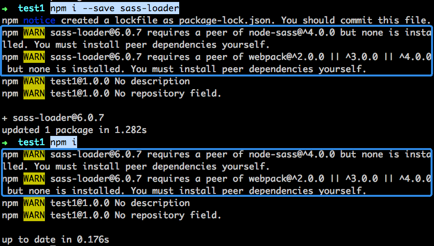

关于package.json中的包配置
dependencies
- 该配置项放的是和业务挂钩的包，其缺失会影响正常业务运行
- 在package.json文件的同级目录下，运行
npm install会安装此配置中的包 - 运行
npm install $package，会把$package包写入dependencies配置项 - 运行
npm install --s $package，会把$package包写入dependencies配置项 - 具备传递安装，例如：A依赖于B，B依赖于C，然后安装A的时候，会自动把B和C都安装了
devDependencies
- 该配置项放的是和业务无关的包，其缺失不会影响正常业务运行，仅用于开发调试
- 在package.json文件的同级目录下，运行
npm install会安装此配置中的包 - 在package.json文件的同级目录下，运行
npm install --production，则不会安装此配置中的包 - 运行
npm install --dev $package，会把$package包写入此配置项中 - 不具备传递安装
peerDependencies
- 3.0之前的版本，会自动安装该配置项中的包，但是如果同一个包安装了多个不同的版本，则会报错
- 3.0以后，只会做警告提示，然后需要自行安装和解决冲突
- 主要用在插件的开发中，例如：
sass-loader是为webpack开发的加载器，其兼容webpack 2.x到4.x版本，那么便可在该包的peerDependencies配置项中，写入"webpack": "^2.0.0 || ^3.0.0 || ^4.0.0" - 非附属关系，不建议使用该配置项（例如：某个包，其应用范围很广或独立性强，那么就不适宜如此使用）

版本号
- 用 ~ 指示范围
~1.2.3: >= 1.2.3 < 1.3.0~1.2: >= 1.2.0 < 1.3.0~1: >= 1.0.0 < 2.0.0~0.2.3: >= 0.2.3 < 0.3.0
- 用 ^ 指定范围
^1.2.3: >=1.2.3 < 2.0.0^0.2.3: >=0.2.3 < 0.3.0^0.0.3: >=0.0.3 < 0.0.4
其他从字面意思理解
>、>=、<、<=、*、|| 等